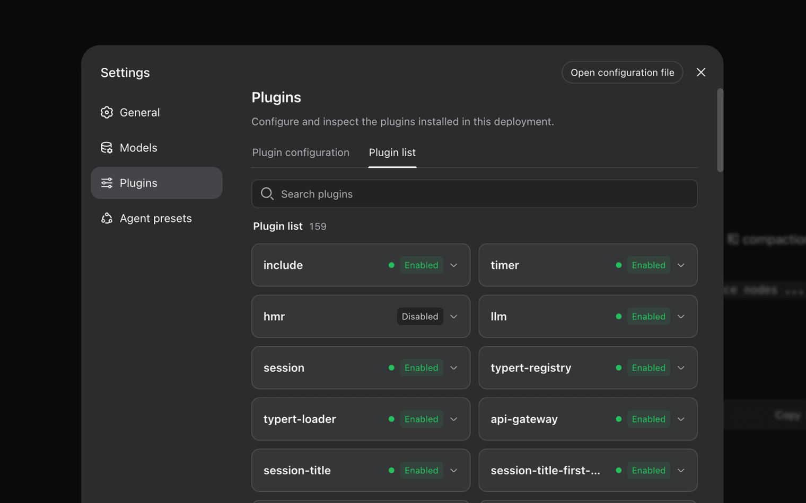

09 DeepSeek 게시일 2026.08.13
DeepSeek, 에이전트 하네스 소스까지 열었다

DeepSeek가 에이전트 하네스 개발자 프리뷰를 공개했다. 소스 코드도 같은 시점에 함께 열었다. 이번 공개의 중심은 "Everything is a Plugin" 구조다. 개발자는 소스를 직접 고치지 않고 설정으로 기능을 선택하거나 바꿔 넣을 수 있다.
핵심 브리핑
DeepSeek는 에이전트 하네스를 전 세계 개발자에게 개발자 프리뷰로 제공했다. 소스 코드도 함께 공개했다. 하네스는 에이전트가 환경을 이해하고 도구를 쓰며 실제 작업을 계속하게 돕는다. Cordis 커널은 플러그인의 마운트와 언마운트, 의존성을 관리한다.
모든 기능은 플러그인으로 구현돼 개발자가 설정만 바꿔 조합할 수 있다. DeepSeek는 모델이 본 내용을 append-only 세션 로그에 기록한다고 밝혔다. 시스템 프롬프트, 추론, 도구 호출과 결과, 서브에이전트 스케줄링, 컨텍스트 주입이 기록 대상이다. Trajectory 보기에서는 기록의 출처를 따라 확인할 수 있다.
- 플러그인 대상: models, tools, skills, sessions, sandboxes, storage, loops, scheduling, UI
- 실행 명령 예시: `npx @deepseek-ai/dsh web`
- 소스 설치 예시: `git clone https://github.com/deepseek-ai/deepseek-harness`
- Standard mode: 전체 도구 세트 포함
- Code mode: 모델이 만든 코드로 여러 차례 도구 호출을 조율
- Minimal mode: 셸 도구와 파일 편집기만 남겨 최소 환경에서 벤치마크
- Creator mode: 현재 런타임을 살피고 메모리 안에서 Cordis 플러그인을 시험
DeepSeek는 하네스가 아직 개발자 프리뷰 단계라고 밝혔다. 핵심 플러그인과 API는 계속 바뀔 수 있다.
도입 가치
이 도구의 차이는 모델 어댑터나 도구만 분리한 수준에 그치지 않는다는 데 있다. 세션, 저장소, 루프, 스케줄링, UI까지 같은 방식으로 분리했다. 그래서 특정 모델이나 도구에 묶이지 않고 운영 구성을 바꾸기 쉽다.
운영 측면에서 눈에 띄는 부분은 추적성이다. DeepSeek는 모델이 본 내용과 도구 실행 흐름을 같은 이벤트 스트림에 남긴다고 설명했다. 재개, 포크, 검색, 리플레이도 이 기록을 기준으로 동작한다. 다만 개발자 프리뷰 단계라서 API와 핵심 플러그인이 계속 변할 수 있다.
업계의 움직임
관련 커뮤니티와 매체는 "Everything is a Plugin" 구조를 핵심으로 짚었다. GeekNews는 모델 어댑터와 도구뿐 아니라 세션 로그와 에이전트 루프까지 플러그인으로 구성한 점을 강조했다. The New Stack도 같은 사건을 오픈소스 에이전트 하네스 공개로 다뤘다.
시사점과 체크포인트
우리 회사가 에이전트 기반 업무 도구를 검토한다면, 모델 성능보다 먼저 실행 통제와 기록 구조를 봐야 한다. 세션 로그가 append-only라면 감사와 사후 점검에 유리하다. 반면 기록 범위가 넓으면 민감정보 저장 정책을 먼저 정해야 한다.
검토할 팀은 AI 플랫폼팀, 정보보호팀, 인프라 운영팀이다. 확인할 질문은 분명하다. 어떤 로그가 남는지, 샌드박스를 어떻게 격리하는지, 내부 인증과 저장소 정책에 맞게 플러그인을 통제할 수 있는지 따져야 한다. 개발자 프리뷰라서 API 변경 가능성도 전제해야 한다.
주요 용어
원문 정보
제목: DeepSeek Harness developer preview
게시일: 2026.08.13
출처 URL: https://deepseek.com/harness/en/